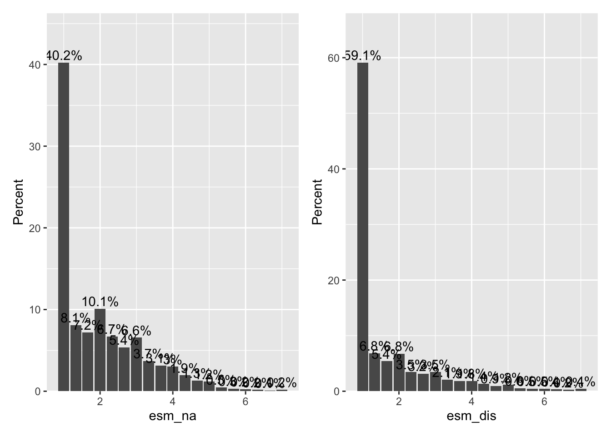
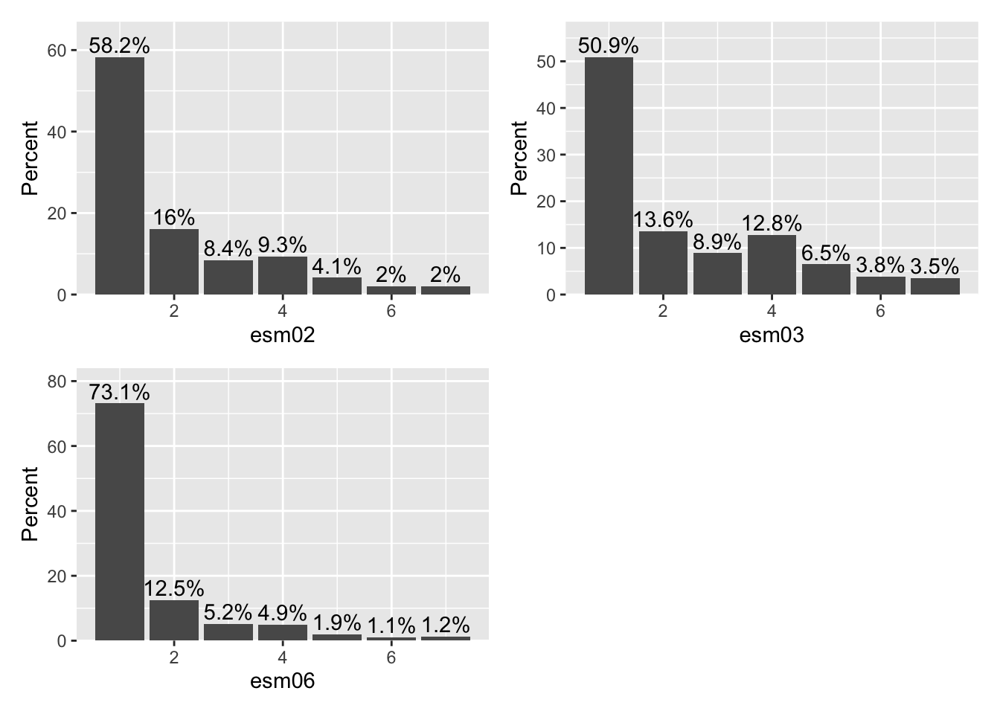

pacman::p_load(tidyverse, haven, ctsem)Analysis: Disorganized Schizotypy and Experiences
Preparation
Load Packages
Import Raw Dataset
org_data <- read_sav("data/tk_2020.sav")
data <- org_dataRename Dataset
names(data) <- tolower(names(data))Subset Dataset
data <- data %>%
select(
# Demo, Markers
id, day, beep, date, time,
# Disorganized Schizotypy
zdis,
# Stressful Situations
esm25,
# Negative Affect
esm02, esm03, esm06,
# Disorganized Experiences
esm04, esm07, esm10
)Create Time Variable
data <- data %>%
mutate(
datetime = as_datetime(date) + time
) %>%
group_by(id) %>%
arrange(datetime, .by_group = TRUE) %>%
mutate(
time_hour = as.numeric(difftime(datetime, first(datetime), units = "hours"))
) %>%
mutate(
time_day = as.numeric(difftime(datetime, first(datetime), units = "days"))
) %>%
ungroup()Drop Missing Time
org_count <- data %>%
nrow()
org_count[1] 12759clean_count <- data %>%
filter(!is.na(time_day)) %>%
nrow()
clean_count[1] 12723org_count - clean_count[1] 36
Note
We only lost 36 responses, miniscule.
data <- data %>%
filter(!is.na(time_day))Descriptives
What is N?
n_distinct(data$id)[1] 203Create Composite Variables
data <- data %>%
mutate(esm_na = rowMeans(across(c(esm02, esm03, esm06)), na.rm = F)) %>%
mutate(esm_dis = rowMeans(across(c(esm04, esm07, esm10)), na.rm = F))All Variables
tidySEM::descriptives(data) %>%
select(name, n, missing, unique, mean, sd, min, max, range, skew, kurt) %>%
mutate(across(where(is.numeric), ~round(.x, 2))) %>%
DT::datatable()Visualization
# cust function
bar_pct <- function(data, var) {
ggplot(data, aes({{ var }})) +
geom_bar(aes(y = after_stat(count / sum(count) * 100))) +
geom_text(aes(y = after_stat(count / sum(count) * 100),
label = after_stat(paste0(round(count / sum(count) * 100, 1), "%"))),
stat = "count", vjust = -0.3) +
labs(y = "Percent") +
scale_y_continuous(expand = expansion(mult = c(0, 0.15)))
}Composite Variables
library(patchwork)
bar_pct(data, esm_na) +
bar_pct(data, esm_dis)Warning: Removed 4998 rows containing non-finite outside the scale range
(`stat_count()`).
Removed 4998 rows containing non-finite outside the scale range
(`stat_count()`).Warning: Removed 4997 rows containing non-finite outside the scale range
(`stat_count()`).
Removed 4997 rows containing non-finite outside the scale range
(`stat_count()`).
Items
Negative Affect
(bar_pct(data, esm02) +
bar_pct(data, esm03) +
bar_pct(data, esm06)) +
plot_layout(ncol = 2)Warning: Removed 4997 rows containing non-finite outside the scale range
(`stat_count()`).
Removed 4997 rows containing non-finite outside the scale range
(`stat_count()`).
Removed 4997 rows containing non-finite outside the scale range
(`stat_count()`).
Removed 4997 rows containing non-finite outside the scale range
(`stat_count()`).Warning: Removed 4998 rows containing non-finite outside the scale range
(`stat_count()`).
Removed 4998 rows containing non-finite outside the scale range
(`stat_count()`).
Disorganized Experiences
(bar_pct(data, esm04) +
bar_pct(data, esm07) +
bar_pct(data, esm10)) +
plot_layout(ncol = 2)Warning: Removed 4997 rows containing non-finite outside the scale range
(`stat_count()`).
Removed 4997 rows containing non-finite outside the scale range
(`stat_count()`).
Removed 4997 rows containing non-finite outside the scale range
(`stat_count()`).
Removed 4997 rows containing non-finite outside the scale range
(`stat_count()`).
Removed 4997 rows containing non-finite outside the scale range
(`stat_count()`).
Removed 4997 rows containing non-finite outside the scale range
(`stat_count()`).